Personal Projects
Barbell and Body Tracker

This project focuses on tracking the movement of a barbell and body parts during weightlifting exercises using image processing techniques. By analyzing video recordings, the system identifies the barbell and key body parts, then calculates the barbell's velocity, path, and provides form improvement tips to help prevent injuries.
The tech stack includes the Flask framework for ui with python backend and postgres database with OpenCV used for image processing and tracking bodyparts.
Odyssey Strength Website
Currently working on a website for my powerlifting team which is created using react native with supabase. Hosted in aws with Jenkins for CI/CD running on a raspberry pi.
This is currently unavailable to the public